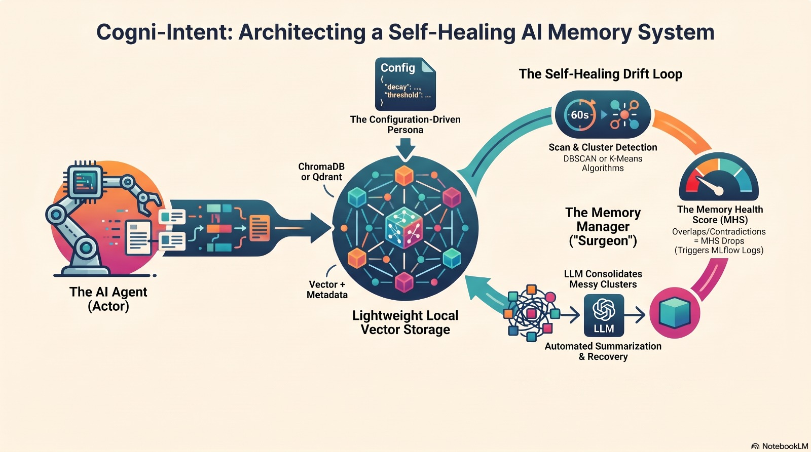

Architecture: Model Layer & Drift-Aware Schema
A clear technical breakdown of how Cogni-Intent turns clinical text into numbers (embeddings), stores records in ChromaDB, and uses smart history tracking to fix conflicting facts automatically.
The 4-Layer Autonomous Immune Architecture
The NLP Processing & Vector Layer
Cogni-Intent converts raw clinical observations into mathematically rigorous representations. This layer focuses on high contextual fidelity, computational efficiency, and sub-millisecond retrieval speeds.
384-D Dense Vectors
Uses optimized Sentence-Transformers (all-MiniLM-L6-v2) to decrease memory overhead by 75% compared to 1536-D models while preserving clinical semantics.
Mean Pooling
Token representations over attention masks are mathematically aggregated:
Abstraction Storage
Embeddings are managed through a decoupled client interface (ChromaDB), enabling zero-downtime database swapping (e.g. Qdrant, Milvus, or pgvector) for enterprise deployments.
"Never treat AI memory as disposable scratch paper. In healthcare and high-stakes systems, every memory update must preserve a complete history chain so doctors can always verify past treatments."
The "Drift-Aware" Schema
To prevent hallucinations and support automated consolidation, every stored vector must carry strict contextual provenance. This schema enables temporal decay calculations, soft eviction, and lineage graph traversal.
| Field Key | Data Type | Clinical Purpose & Impact |
|---|---|---|
| relevance_score | Float (0.0 – 1.0) | Tracks priority weight; decayed dynamically over time via exponential half-life functions to penalize stale clinical assumptions. |
| timestamp | Float (Unix epoch) | Enables chronological ordering of medical events, vital for detecting evolving symptoms, dosage adjustments, and new contraindications. |
| is_consolidated | Boolean | Identifies whether a vector is raw uncurated input or an authoritative "Golden Fact" synthesized by the LLM healer. |
| supersedes_ids | String (UUIDs) | Comma-separated foreign keys pointing backwards to the obsolete memories that were consolidated, preserving complete audit trails. |
| is_archived | Boolean |
Enforces Soft-Eviction. Active agent queries filter by where: {"is_archived": false}, keeping retrieval hot pool free of superseded data.
|
| patient_id | String | Patient entity isolation key ensuring cross-patient memory pollution cannot occur during multi-tenant retrieval or clustering. |
Figure 1: Processing Layer & Model Architecture
zoom_in Zoom
Processing flow from tokenization to mean-pooled sentence vectors.
Figure 2: Storage Architecture & Lineage Schema
zoom_in ZoomDiachronic storage layer linking active and soft-evicted memory nodes.